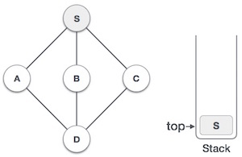

Depth First Search algorithm(DFS) traverses a graph in a depthward motion and uses a stack to remember to get the next vertex to start a search when a dead end occurs in any iteration.

As in example given above, DFS algorithm traverses from A to B to C to D first then to E, then to F and lastly to G. It employs following rules.
Rule 1 − Visit adjacent unvisited vertex. Mark it visited. Display it. Push it in a stack.
Rule 2 − If no adjacent vertex found, pop up a vertex from stack. (It will pop up all the vertices from the stack which do not have adjacent vertices.)
Rule 3 − Repeat Rule 1 and Rule 2 until stack is empty.
| Step | Traversal | Description |
|---|---|---|
| 1. | |
Initialize the stack |
| 2. |  | Mark S as visited and put it onto the stack. Explore any unvisited adjacent node from S. We have three nodes and we can pick any of them. For this example, we shall take the node in alphabetical order. |
| 3. | |
Mark A as visited and put it onto the stack. Explore any unvisited adjacent node from A. Both S and D are adjacent to A but we are concerned for unvisited nodes only. |
| 4. | |
Visit D and mark it visited and put onto the stack. Here we have B and C nodes which are adjacent to D and both are unvisited. But we shall again choose in alphabetical order. |
| 5. | |
We choose B, mark it visited and put onto stack. Here B does not have any unvisited adjacent node. So we pop B from the stack. |
| 6. | |
We check stack top for return to previous node and check if it has any unvisited nodes. Here, we find D to be on the top of stack. |
| 7. | |
Only unvisited adjacent node is from D is C now. So we visit C, mark it visited and put it onto the stack. |
As C does not have any unvisited adjacent node so we keep popping the stack until we find a node which has unvisited adjacent node. In this case, there's none and we keep popping until stack is empty.
To see the implementation of this algorithm in C programming language, click here.